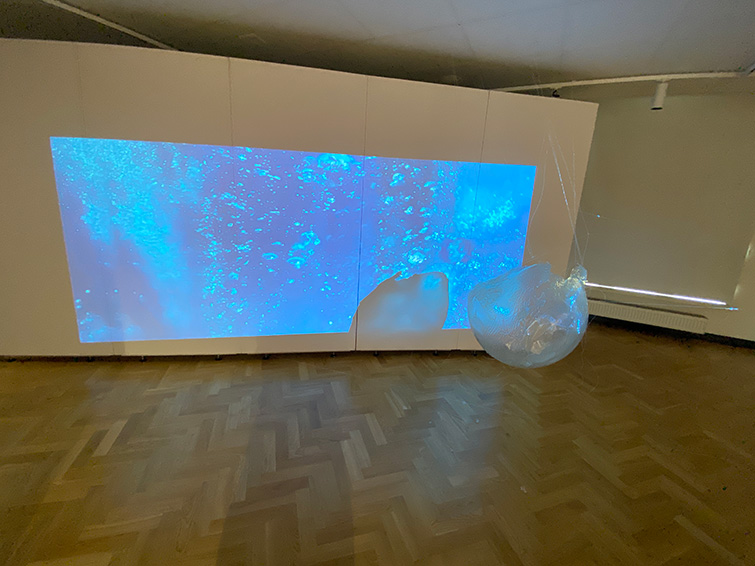
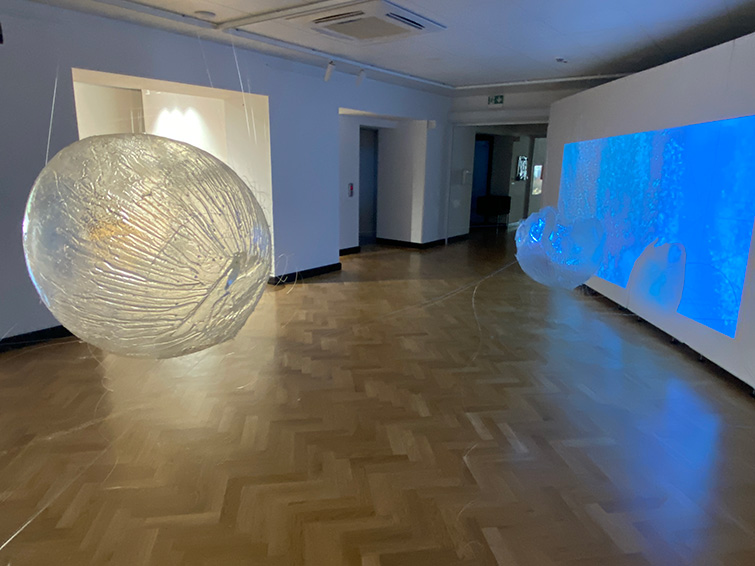
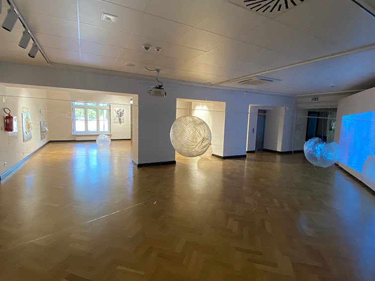
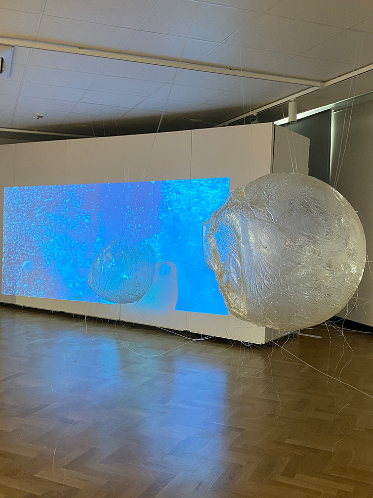
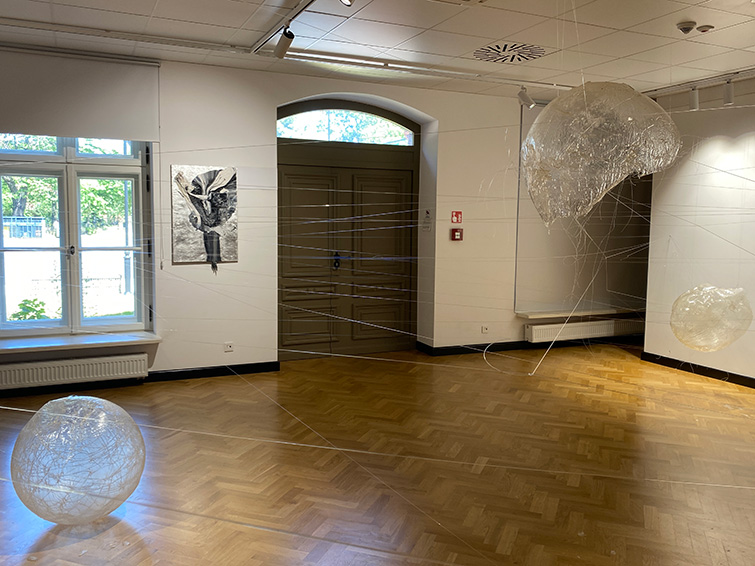
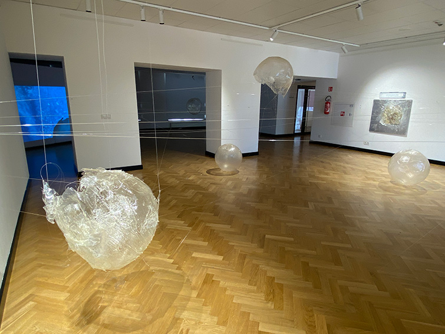
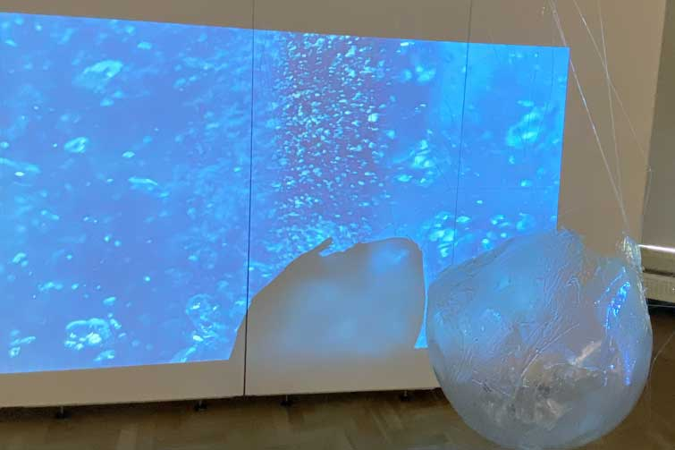
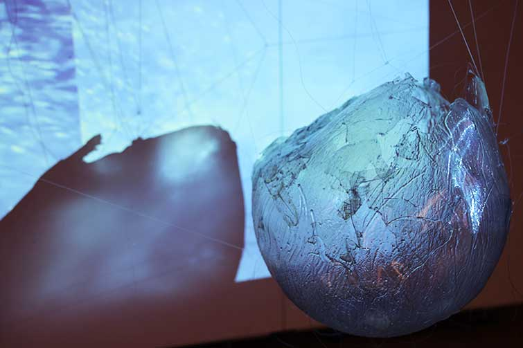

SHIELDS OF SHELF









SHIELDS OF SHELF - instalacja prezentowana na wystawie indywidualnej WYROLE w Akademickim Centrum Designu w Lodzi, 2025
Tytul sugeruje przestrzen pomiedzy tym, co wewnetrzne, a tym, co zewnetrzne. Kule z zywicy epoksydowej dzialaja jak oslony indywidualnej tozsamosci - jednoczesnie chronia i eksponuja. Material, przezroczysty i kruchy, pozwala obserwatorowi dostrzec zarowno strukture formy, jak i wrazliwosc, ktora ona reprezentuje. Prawie niewidoczne siec zylek przebiegajaca miedzy kulami w przestrzeni, to powiazania, skomplikowany labirynt polaczen miedzy jednostkami, ktore zawsze na siebie oddzialuja.